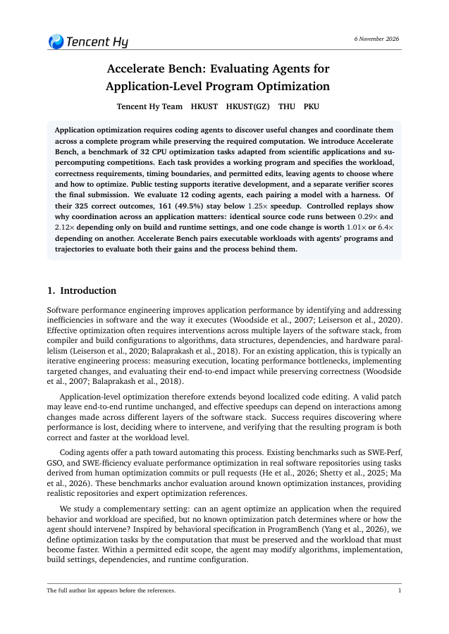

Correct programs often gain little.
161 of 325 correct outcomes stay below 1.25× speedup. Passing the workload does not ensure a useful reduction in runtime.
Main results ↗A benchmark for application optimization
Can coding agents make whole applications faster?
Real source trees. End-to-end workloads.
Correctness before speed.
01 / Results
Download reported results ↓One selected outcome per agent and task. Every score rewards faster execution only after the program passes its correctness checks.
32 tasks · Reported in the paper
| # | Agent model | Effort |
|---|
Paper Table 1 · 12 agents × 32 tasks = 384 selected outcomes. Score@1 and Aτ are percentages; GM is in ×. Each agent pairs a model with a harness. An incorrect or unaccelerated outcome receives zero runtime-saving reward.
Score@1 averages correctness-gated runtime savings across 32 equally weighted tasks: C × max(0, 1 − candidate time / baseline time). A correct 2× speedup earns 50%; a correct program with no speedup earns zero.
Aτ is the fraction of tasks that are correct and reach at least τ× speedup. GM is the geometric mean speedup, with incorrect or unaccelerated outcomes assigned 1×.
For the eight configurations with repeated attempts, the median-reward run among the latest three policy-eligible scored attempts represents each agent–task pair. GPT-6 Astra, Gemini-3.8-Flash, Kimi K3 (max), and GLM-5.3 (max) use their sole attempt. All main-table metrics refer to the same selected record. The separate analysis cohort contains 480 runs.
02 / The benchmark
Agents decide where and how to optimize. The task fixes what the application must compute, what can change, and where timing begins and ends.
Start from a working implementation, workload, and resource budget.
Coordinate source changes, compilation options, and runtime configuration.
Use public correctness and performance feedback to retain a candidate.
An independent verifier rebuilds the final program and checks private inputs.
03 / Task collection
Scientific software, from simulation to I/OBrowse all 32 tasks. Open a task to see its resource limits and each agent's reported runtime savings.
Names and resource allocations follow the final paper. HPCG-derived, HPL-derived, and IO500-derived are adapted tasks, not official competition benchmark scores.
04 / What the experiments reveal
Correctness, configuration, and interacting changes shape the final result. Three findings from the experiments.
161 of 325 correct outcomes stay below 1.25× speedup. Passing the workload does not ensure a useful reduction in runtime.
Main results ↗In the controlled GROMACS replay, changing only build and runtime settings changes speedup across this range.
Controlled experiments ↗A QiboTN code change brings almost no gain alone, but a substantial gain with another optimization in place.
Interacting code changes ↗480 runs / five agents / three runs per task
Retained trajectories connect what agents inspect, build, test, repair, and submit with the final outcomes.
05 / Paper & authors

Read the paperEvaluating Agents for Application-Level Program Optimization
‡ Project Lead † Corresponding author: chennuo26@gmail.com
Contact: Bowen Liu · bliu690@connect.hkust-gz.edu.cn
@misc{liu2026acceleratebench,
title = {Accelerate Bench: Evaluating Agents for
Application-Level Program Optimization},
author = {Liu, Bowen and Li, Yuhan and Chen, Nuo and
Luo, Weile and Peng, Miao and Zhang, Qintong and
Zhang, Qifan and Li, Jia and Gao, Ziqi and Huang, Lydell},
year = {2026},
url = {https://acceleratebench.com/}
}Resources
The paper and reported results are available here. Versioned task packages, public tests, and verifiers are being prepared for release.